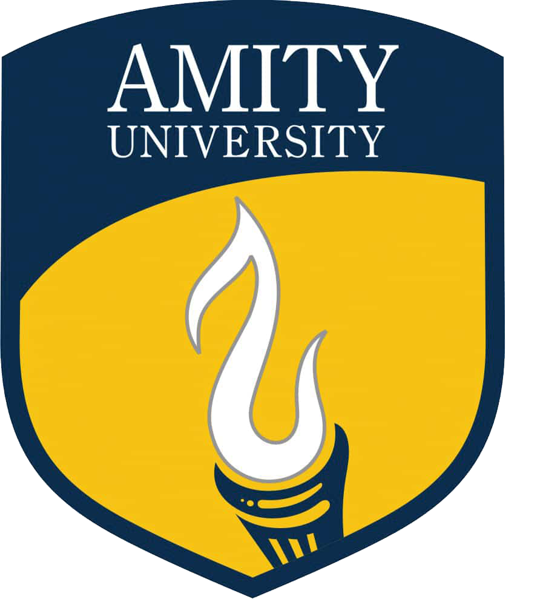
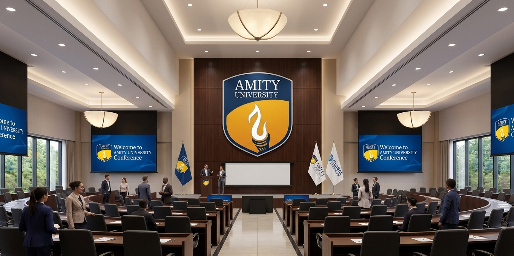
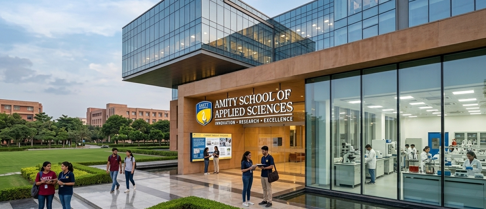

AMITY UNIVERSITY HARYANA
AMITY SCHOOL OF APPLIED SCIENCES
Organizing
FAST-SD 2026

The International Conference on Frontier Areas of Science and Technology for Sustainable Development (FAST-SD 2026)
aims to provide an interdisciplinary platform for researchers, academicians, industry experts, and students to share recent advances
in emerging areas of science and technology. The conference will focus on innovative research and technological developments
that contribute to sustainable development and address global challenges such as energy, environment, and resource management.
FAST-SD 2026 will include keynote lectures, invited talks, oral and poster presentations, encouraging collaboration and knowledge
exchange among participants. The conference seeks to promote interdisciplinary research, inspire young scientists, and foster
partnerships between academia and industry for developing sustainable scientific solutions.

The research and development community are encouraged to submit contributions in the following areas, but not limited to:
| Chemical & Physical Science | Mathematical Science | Forensic Sciences |
|---|---|---|
|
Nanostructured Materials Smart Materials Biomaterials Nanofluids Hazardous Materials Water Purification Protein Engineering 2D Materials Piezoelectric Materials AI for Sustainability Functional Oxide Materials Solar Photovoltaic Quantum Dots Hydrogel Nano Ferrites for Agriculture Ferroelectric Materials Li-ion Batteries Polymeric Materials Electronic Materials Microwave Materials Magnetic Nanomaterials Liquid Crystal Luminescence / Phosphor Biosensors Drug Delivery Composite Materials Optically Active Nanomaterials |
Air Pollution & Climate Modelling Fixed Point Theory & Nonlinear Analysis Fuzzy Systems & Reliability Analysis Computational Fluid Dynamics Fractional Calculus Neural Networks Mathematical Modelling & Scientific Computing Graph Theory & Network Security Optically Active Nanomaterials Decision Science Dynamical Systems Operations Research & Management Science |
DNA Fingerprinting Forensic Medicine Forensic Serology Explosive Materials Forensic Chemistry Forensic Entomology Cyber Forensics Forensic Ballistics Genomics & Epigenomics Forensic Odontology & Anthropology Environmental Forensics Forensic Toxicology |
Amity University Haryana (AUH), Gurugram, is a part of the Amity Education Group and is known for its world-class academic
infrastructure and strong research ecosystem. Established under Act No. 10 of 2010 by the State Legislature of Haryana,
AUH is a State Private University empowered to award degrees under Section 22 of the UGC Act, 1956. Spread across a 110-acre green
campus near Gurugram, one of India’s major corporate hubs, AUH provides a vibrant academic and research environment and is India’s
first university to receive LEED Platinum certification for its green building campus.
The University has established global standards in education, training, and research through advanced infrastructure, innovative
teaching methods, and digital integration. Research and innovation are key strengths of the Amity ecosystem, with 500+
government-funded and international research projects supported by agencies such as ANRF, DRDO, and ICMR. With a large and diverse
student community and strong industry collaborations, Amity continues to foster interdisciplinary learning and nurture future-ready
researchers and professionals committed to sustainable development.
Amity School of Applied Sciences (ASAS) is recognized for its strong academic foundation and research-driven environment.
The school offers a range of undergraduate, postgraduate, and doctoral programmes in core and interdisciplinary areas of science,
supported by experienced faculty members and well-equipped laboratories. ASAS actively promotes a culture of scientific inquiry and
innovation through quality teaching, research mentorship, and collaborative learning.
Since 2012, ASAS has regularly organized
national and international seminars, workshops, and conferences to facilitate knowledge exchange and expose students and researchers
to emerging developments in science and technology. A highly qualified team of faculty members with PhD, and postdoctoral experience
from national (IIT, NIT, DU) and international institutes (KHU South Korea, Univ. of Ottawa; Canada, Univ. of Idaho; USA, etc.)
ensures that the best education is provided to the students.
The institute has received many grants from different agencies viz
DST-FIST (PS and CS), DST Haryana, DRDO, ICMR, ANRF & a consultancy project from AMT Inc. USA etc. Faculty members and research
scholars are actively engaged in research projects, publications in reputed journals, and collaborations with national and
international institutions. The school strongly encourages students to participate in research projects, internships, and academic
activities that enhance their analytical and problem-solving skills.
Through its focus on academic excellence, interdisciplinary
research, and innovation, ASAS continues to contribute significantly to scientific advancement and the development of skilled
researchers and professionals.
